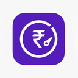

Welcome to Meesho Ads Spend Monitor
It checks your Meesho ad spend every 15–25 minutes in the background and alerts you when a campaign burns money. It only reads data. It never logs in for you, never changes campaigns, and never stores your password.
Pin the extension to your toolbar
- Click the puzzle-piece icon (Extensions) at the top right of Chrome.
- Find Meesho Ads Spend Monitor and click the pin icon.
- The purple icon now sits in your toolbar. Click it any time to see status, run a check, or resume.
The icon badge tells you the state at a glance: no badge = healthy, SET = setup incomplete, ! = paused and needs you.
Log in to Meesho and open the Ads page
- In this Chrome profile, log in to supplier.meesho.com as usual, with your phone or email and OTP.
- Go to Ads in the left menu so the URL looks like
/panel/v3/new/ads/<id>/advertisement. - Keep that tab open. The extension detects your account from it. You never type an ID or password here.
Copy the campaign-list request body (one time)
Meesho's Ads page sends a small JSON request to load your campaigns. The extension needs that same request body so it asks for exactly what the page asks for. You only do this once. You can then copy it to other profiles with Export/Import.
- On the Meesho Ads page, press F12 (or Ctrl+Shift+I) to open DevTools.
- Open the Network tab, then type
fetch-campaign-listin the filter box. - Reload the page (F5). A row named
fetch-campaign-listappears. Click it. - Open the Payload tab, click view source, and copy the JSON. It's short, about 80 characters.
- Paste it below and click Save body.
connect.sid, s_id or _abck with anyone. They give full access to your account.The list shows only 10 campaigns. Do I need pagination?
If the payload has a field like page, offset or page_number, enter its name under Settings → Advanced → Pagination field. The extension then fetches up to 3 pages, and only when that's needed to see all LIVE and today's campaigns.
Tip: if the payload has a status filter, setting it to LIVE is the most efficient choice.
Set your spend limits
Choose where alerts go
Telegram alerts on your phone (recommended)
- In Telegram, open @BotFather and send
/newbot. Pick any name and username. - BotFather replies with a token like
123456:ABC-xyz…. Paste it below. - Open your new bot in Telegram and send it any message, such as
/start. - Click Detect chat ID. The extension finds your chat automatically.
Using several shops? Use the same bot and chat ID in every profile. Each message starts with the shop name.
Send a test alert
You should see a desktop pop-up, a Telegram message, or both. If nothing arrives, see Troubleshooting below.
Run your first check
This reads your campaign list once, through the open Meesho tab, and shows what it found. After that, checks run on their own.
Add your other shops (Chrome profiles)
- Here, open Settings → Export settings. This saves your limits and request body to a file. The Telegram token is left out on purpose.
- Switch to the next Chrome profile, open
chrome://extensions, turn on Developer mode, click Load unpacked, and select the same extension folder. - In the new profile, log in to that shop's Meesho account and open its Ads page (step 2).
- Open Settings → Import settings, then re-enter the Telegram token and give the shop its own label.
- Set a different Start offset per profile (0, 7, 14, 21 minutes…) so the shops don't all check at the same moment.
Using it every day
Keep these running
- Chrome stays open, with each profile window open (it can be minimized).
- The Meesho Ads tab stays logged in. If you close it, the extension reopens it as a small pinned tab (Auto-open tab setting).
- The PC doesn't sleep. On Windows: Settings → System → Power → Sleep → Never while plugged in.
- Checks only run during your active hours (default 08:00–23:00 IST).
What each alert means
| Alert | Fires when | Suggested action |
|---|---|---|
| ⚠️ Per-campaign limit | A LIVE campaign has spent your per-campaign ₹ limit or more | Open Meesho Ads and decide whether to pause it |
| ⚠️ Budget % used | A LIVE campaign has used your warning % of its budget (default 80%) | Check whether it is converting before it hits 100% |
| ⚠️ Spend with 0 orders | Spend reached your wasted-spend ₹ amount with no orders | Usually worth pausing or changing the catalog |
| 🚨 Daily limit crossed | Today's campaigns together crossed the daily total | Review all of today's campaigns |
| ⛔ Monitoring paused | Meesho logged you out, blocked a request, or showed a captcha | Log in manually, then click Resume in the popup |
| 💚 Heartbeat | Once a day (default 21:00): proof the monitor is alive, with today's spend | Nothing. If it doesn't arrive, check that Chrome and the PC are on |
Each alert is sent once. You get it again only if spend rises by another ₹50 (Re-alert step setting). Alert memory resets at midnight IST.
The toolbar popup
- Status: Healthy, Setup needed, or Paused, with the last error if there is one.
- Live campaigns and today's spend from the most recent check.
- Check now runs a check immediately. Use it sparingly, because the low frequency keeps your account safe.
- Resume appears after a pause. Click it only after you have logged back in to Meesho.
Troubleshooting
Badge shows “SET” or status says “Open the Meesho Ads page once…”
“Request body not configured” or “not valid JSON”
{ and ends with }. To check that alerts work without it, tick Use demo data.Monitoring paused: session expired or blocked
Test alert: no desktop pop-up
chrome://settings/content/notifications isn't blocking all notifications.Telegram: “chat not found” or Detect finds nothing
Alerts stopped and no heartbeat arrived
Spend numbers look different from the Meesho dashboard
budget_utilised from the same API the Ads page uses, so small differences are usually just timing between checks. “Today” is based on each campaign's start date in IST.